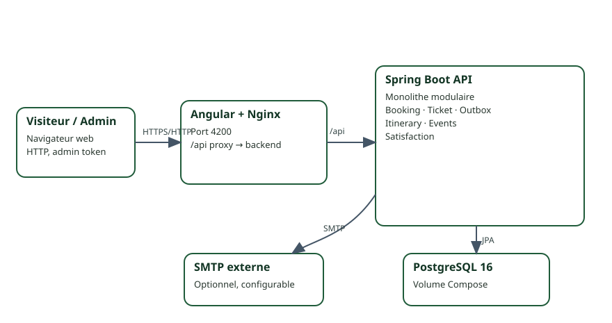
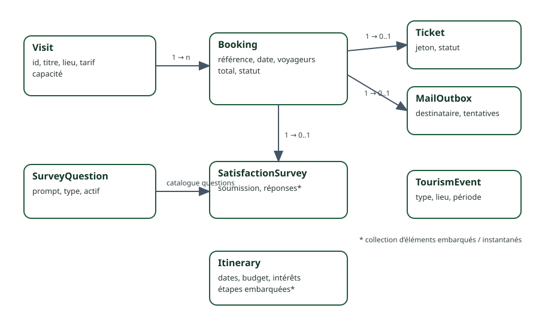
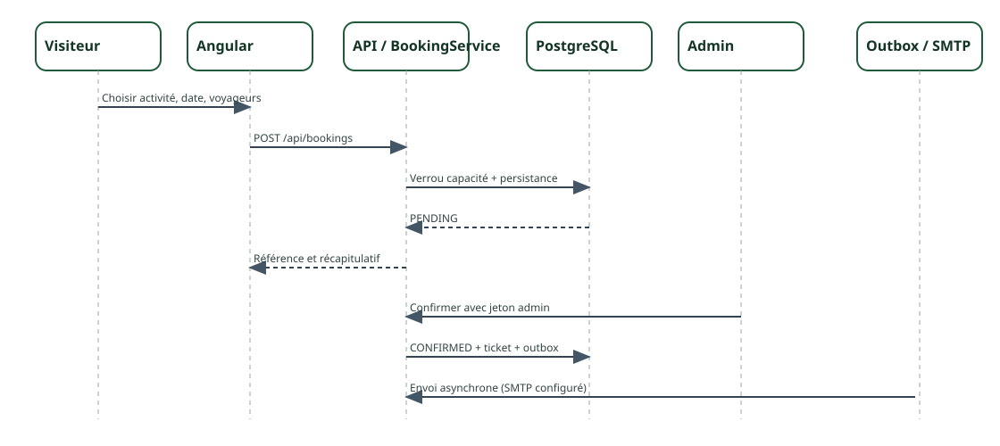

Rapport de projet — Licence 3 Informatique
Version pour soutenance · 17 novembre 2026
Document établi à partir du dépôt et des vérifications effectivement réalisées. La pile Docker a été construite et démarrée ; les parcours et captures d’écran proviennent de l’application en exécution. Aucun envoi SMTP réel n’a été revendiqué, car aucun compte SMTP n’était configuré.
Le tourisme en Casamance repose sur une offre variée d’activités culturelles, naturelles et littorales. Ce projet met en place une application web qui rassemble la découverte d’activités, la réservation, l’information avant visite et le retour de satisfaction. L’application est développée avec Angular, Spring Boot et PostgreSQL.
Une offre distribuée sur plusieurs lieux rend difficile la comparaison des visites, la vérification des capacités et la centralisation des confirmations. La problématique est de fournir au visiteur un parcours numérique cohérent tout en donnant aux responsables des outils de gestion simples. Les données disponibles étant limitées, l’application distingue les données démonstratives des événements saisis par l’administration.
Les besoins visiteurs sont : explorer le catalogue, consulter une activité, demander et suivre une réservation, obtenir un billet vérifiable après confirmation, préparer un séjour adapté à des intérêts/durée/budget, rechercher des événements et transmettre une enquête après visite. Les responsables doivent traiter les demandes, publier des événements et administrer le questionnaire. Les règles sensibles — statut, capacité, calcul du total et éligibilité à l’enquête — sont appliquées par l’API.
Fonctions : réservations et annulation conditionnelle ; cycle PENDING, CONFIRMED, CANCELLED, COMPLETED ; QR individuel vérifiable ; e-mail par outbox ; itinéraire déterministe ; recherche événementielle combinable ; questionnaire et agrégats. Contraintes : interface responsive, validation côté serveur, séparation des responsabilités, données persistées dans PostgreSQL et références non prévisibles. Les créneaux horaires, paiement, compte visiteur, géolocalisation routière et rôles complets ne sont pas dans cette version.

Le frontend Angular appelle une API unique. Dans l’API sont organisés les cas d’usage Booking, Ticket, Notification/Outbox, Itinerary, Event Discovery et Satisfaction. Ils partagent le même processus Spring Boot et la même base. Le courriel sortant dépend d’un serveur SMTP configuré. Le diagramme architecture.mmd représente ces relations réellement déployées.
Angular 19 est compilé en ressources statiques et servi par Nginx dans le conteneur frontend. Nginx relaie /api vers backend:8080 sur un réseau Compose privé. Spring Boot 3.4/Java 17 accède à PostgreSQL 16 via Spring Data JPA. Compose définit un volume DB et des healthchecks ordonnant DB, API puis frontend. En développement, Angular CLI relaie /api vers localhost:8080 via proxy.conf.json.
L’audit du dépôt initial a trouvé une application Angular, une API Spring Boot et PostgreSQL, sans API Gateway, RabbitMQ ni services autonomes préexistants. Transformer chaque fonction en service séparé ajouterait réseau, découverte, déploiement et cohérence distribuée sans besoin démontré. Les limites de responsabilités sont explicites dans les services ; le choix conserve une transaction locale pour la confirmation et l’outbox. Une extraction ultérieure serait possible si les équipes, charges ou cycles de déploiement l’exigent.
Le vocabulaire métier distingue visite, réservation, billet, notification, itinéraire, étape, événement, questionnaire et réponse. Booking est l’agrégat principal du cycle de réservation : il valide ses transitions et le montant est dérivé du tarif par participant. BookingService orchestre capacité et persistance ; le verrou pessimiste de la visite protège le contrôle de capacité concurrent. Les autres services applicatifs isolent les cas d’usage. Le domaine reste mêlé aux annotations JPA dans ce dépôt : il s’agit de DDD pragmatique, pas d’une architecture hexagonale pure.

Le diagramme de classes domain.mmd montre les associations et instantanés réellement persistés : visite-réservation, billet et enquête associés à une réservation, étapes embarquées dans un itinéraire. Le diagramme de séquence reservation-sequence.mmd décrit la création puis la confirmation. Aucun composant inexistant (Gateway, RabbitMQ, microservice autonome) n’y apparaît.
Visit contient le catalogue et sa capacité. Booking contient une référence UUID, une visite, date, participants, total, coordonnées nécessaires au traitement et état. Ticket porte un jeton distinct et un statut. MailOutbox suit destinataire, état, tentatives et prochaine reprise, avec référence unique. Itinerary enregistre contraintes et estimation ; ses ItineraryStop sont embarquées et mémorisent un instantané de visite. TourismEvent stocke les champs de recherche. SatisfactionSurvey est unique par réservation et contient les réponses embarquées ; celles-ci copient le libellé/type afin de conserver le sens historique. SurveyQuestion décrit les formulaires actifs.
Angular structure l’interface TypeScript et les formulaires. Spring Boot expose les routes REST et gère validation et orchestration. Spring Data JPA persiste les entités. PostgreSQL fournit stockage transactionnel et contraintes relationnelles. ZXing génère les QR. Spring Mail émet les notifications ; l’outbox stocke leur état et leur reprise. Docker Compose orchestre les trois composants. Les versions et liens de documentation sont répertoriés en bibliographie.
L’interface regroupe catalogue, détails, parcours de réservation, espace de suivi et pages billets, itinéraires, événements, satisfaction et administration. ReservationApiService centralise les appels HTTP et les modèles sont déclarés séparément. Les appels conteneurisés restent relatifs (/api) ; le proxy Nginx évite de coder une adresse localhost dans les requêtes du conteneur. npm run build a été exécuté avec succès. Aucun test unitaire Angular n’est configuré.
Les contrôleurs traduisent les contrats HTTP en appels aux services. Les repositories Spring Data encapsulent l’accès à la base. Les requêtes sont validées par annotations et règles métier. Les DTO de réservation n’exposent pas le nom et l’adresse e-mail. Les routes administratives contrôlent X-Admin-Token par comparaison à une configuration serveur. Il s’agit d’un mécanisme de déploiement simplifié, non d’une authentification avec comptes et rôles.
La demande contient activité, date, participants et coordonnées. Le serveur recalcule le total depuis le prix catalogue et verrouille la visite avant d’additionner les réservations non annulées de la date. Une demande commence en attente ; seul l’administrateur la confirme. L’annulation est possible avant la limite calendaire configurée. Une réservation confirmée devient terminée lors d’une lecture après sa date. Les tests de service couvrent calcul, capacité et transitions ; aucun test de concurrence sur PostgreSQL n’est exécuté.

La confirmation crée un ticket avec jeton UUID distinct de la référence de réservation. ZXing encode une URL de vérification, et non des coordonnées personnelles. Le visiteur lit son billet via la référence ; l’endpoint de vérification expose des informations minimales et le statut. L’annulation révoque le ticket. L’interface permet l’affichage et l’impression. Les tests unitaires vérifient la génération SVG et la vérification, sans scan matériel ni suite de tests navigateur intégrée au projet.
Dans la même transaction que la confirmation, une notification unique est ajoutée à l’outbox. Le dispatcher traite l’outbox et Spring Mail envoie la référence, les détails utiles et l’accès au billet. Les erreurs sont journalisées avec reprises progressives jusqu’à cinq tentatives. SMTP absent laisse le message en attente. La livraison est au moins une fois : un doublon est possible après acceptation par SMTP si l’état envoyé ne peut ensuite être enregistré. Le serveur SMTP réel n’a pas été testé.
Le visiteur choisit plusieurs intérêts, date de début, durée (1–14 jours), participants et budget XOF/FCFA. Un algorithme déterministe sélectionne les activités correspondant aux catégories, capacité disponible et prix catalogue ; il limite à trois étapes et huit heures estimées par jour. Le total et le budget restant sont exposés, et l’itinéraire est enregistré puis consultable par référence. Aucun trajet routier ni distance n’est inventé. Modifier les critères produit un nouvel itinéraire ; l’édition d’un itinéraire existant n’est pas fournie.
La recherche combine type, date précise ou intervalle, lieu et mots-clés. Les mots-clés sont appliqués aux champs descriptifs pris en charge par le service. L’administration publie les informations et l’image associée. Aucun événement fictif n’est affiché comme réel. La modification, suppression, pagination et réservation d’événement restent à développer.
Le questionnaire devient accessible pour une réservation terminée. Les types pris en charge sont note de 1 à 5, choix, oui/non et texte libre. Le backend valide les réponses et limite à une soumission par réservation. L’administration gère les questions, puis filtre les agrégats par activité et période ; les valeurs sont regroupées par mois et présentent moyenne des notes et distribution des réponses. Les données restent associées à une référence bearer, sans comptes visiteur. La confidentialité/anonymisation complète n’est donc pas garantie.
Le backend utilise une construction multi-étapes Maven puis une image Java runtime. Le frontend est compilé par Node puis servi par Nginx, qui proxyfie l’API au nom de service Docker. Compose définit PostgreSQL, API et interface, réseau bridge, volume nommé, variables, healthchecks et dépendances service_healthy. docker compose config valide la syntaxe et la résolution de configuration. Les deux images ont été construites avec docker compose up --build -d, et les trois services sont montés avec healthchecks. Les ports hôte 8080 et 4200 étaient déjà occupés ; les ports Docker configurés sont 8081 pour l’API et 4201 pour le site, personnalisables dans .env.
La commande Maven exécutée est mvn -Dmaven.repo.local=/tmp/ms-reservation-m2 test -B : 20 tests, aucun échec ni erreur. npm run build réussit. docker compose config valide la configuration. Les images frontend et backend ont été construites, PostgreSQL et Spring Boot sont devenus sains, Nginx a servi Angular et relayé /api. Des appels HTTP réels ont exercé réservation, confirmation, QR et vérification, génération/relecture d’itinéraire, recherche événementielle combinée et questionnaire après visite. Chrome headless a parcouru et capturé 13 écrans. Les fixtures de recette ont été supprimées après capture. Il n’y a pas de suite E2E automatisée ; les tests ont été exécutés comme recette manuelle automatisée.
Le dépôt ne possédait que PostgreSQL dans Compose ; l’API et le frontend n’étaient pas dockerisés. Le proxy de développement Angular ciblait localhost, une adresse impropre à la communication depuis un conteneur. Nginx et le réseau Compose règlent ce point. Les ports 8080 et 4200 étaient occupés sur la machine et les ports hôte ont été ajustés respectivement à 8081 et 4201. Le premier build a aussi mis en évidence l’importance d’exclure node_modules et target des contextes Docker.
Le modèle n’a pas de créneaux ; les capacités sont journalières. Le compte visiteur et les rôles n’existent pas. La règle d’annulation est provisoire. La migration PostgreSQL repose encore sur ddl-auto:update. SMTP peut produire un doublon exceptionnel. Les itinéraires n’intègrent ni distances, ni transport, ni logement/repas. Les événements nécessitent une saisie réelle. L’image des visites est illustrative. Les tests d’intégration PostgreSQL concurrents, la suite navigateur automatisée et l’intégration SMTP réelle restent à ajouter.
Priorités : migrations Flyway, comptes et Spring Security, politique d’annulation validée avec prestataires, plages/horaires et test de charge concurrent, tests E2E automatisés, boîte SMTP de test et observabilité, gestion complète des événements et centres d’intérêt, édition d’itinéraire, données géographiques vérifiées, sauvegardes et politique de conservation des réponses.
Le projet réalise un parcours fonctionnel de découverte et réservation autour d’un monolithe modulaire cohérent avec le dépôt initial et le cadre Licence 3. Les règles centrales sont implémentées côté serveur et couvertes par 20 tests unitaires. La pile Docker a démarré et la recette HTTP/UI a vérifié les principaux parcours ; les captures authentiques sont fournies en annexe numérique. L’envoi SMTP réel, le test PostgreSQL concurrent et l’automatisation E2E restent des limites explicites.
cp .env.example .env
# Remplacer les secrets d'exemple dans .env
docker compose config
docker compose up --buildPour vérifier les tests : cd backend && mvn test; build interface : cd frontend && npm run build. Les 13 captures issues de l’application réellement démarrée sont dans docs/captures/; leur manifeste précise les fixtures utilisées. La référence des routes est dans docs/api.md, et les diagrammes sources sont sous docs/uml/.
Visites et réservations : /api/visits, /api/bookings, /api/admin/bookings. Billets : /api/tickets/{reference}, /api/tickets/verify/{token}. Itinéraires : /api/itineraries/interests, /api/itineraries. Événements : /api/events, /api/admin/events. Satisfaction : /api/satisfaction/, /api/admin/satisfaction/.